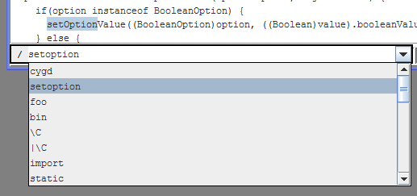
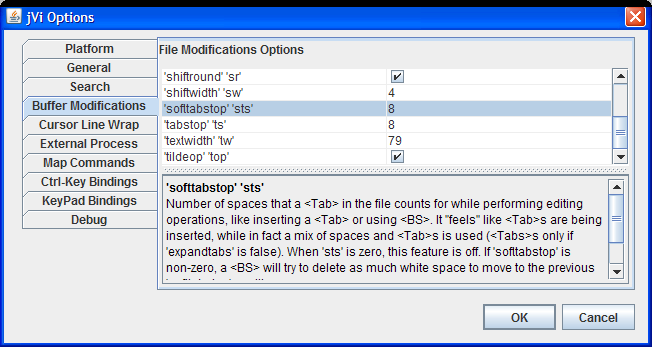

There is a list of most of the normal and visual mode commands supported by jVi. In this list, the over 200 commands supported by jVi are marked. The ' and " for marks and named buffers work as expected; a * is a named buffer for the clipboard. There are a few colon commands available, try :g/foo/s/bar/baz/gp, and also see the platform specific documentation for additional colon commands. There are several insert mode commands supported. And jVi sports a Ctrl-< and Ctrl-> in insert mode to align with '('s on the previous line.
If you are a vi or vim user you can just start using jVi and be comfortable. There are a variety of options available through a dialog. Check the jVi Help Files for more information. Almost all of the reference documentation is derived from the vim help files. A subset of the vim help files are included. They are modified to remove things that are not applicable. This is detailed information on the commands and operation. There are also some jVi only features.
jVi is embedded; where applicable, the standard commands, for example ":w", are directed to the application for execution. There may be capabilities available while editing that are provided by the primary application. For example, when jVi is used within JBuilder, or NetBeans, code completion works while editing. The platform specific documentation about jVi should be consulted.
Recent changes to jVi is good for getting an feel for the available features.
Log bugs at jVi Bug Tracking. Please include both the jVi version number and the application version number, e.g. NetBeans 7.0, when reporting problems. Get the version of jVi with the :version command, also the version of jVi in use is displayed on the jVi Config option property page..
Discuss your issues, problems and/or requests at jVi Open Discussion Forum. This is a good way to indicate what you'd like to see in jVi for NetBeans. Communications can also be sent to jVi.
Text search, "/" and "?", uses the java regular expression syntax, mostly like perl, see Searching and Patterns. As in vim, by default characters like "(", "{" and "|" need to be escaped when part of the regular expression syntax; if you don't want to escape these characters there is an options to change what needs escaping. The java.util.regex package javadocs describe the pattern syntax.
When "/" is entered in normal mode, an entry window is pop'ed up just beneath the current editor pane, as shown on the right. This widget has a combo box UI; the history of search commands is available using the <Up> and <Down> arrows.
Command Entry, after a ":", is similar.
 There are several options that control jVi's behavior. They are usually found though the application's Options menu. There are several tabs that contain jVi options. Most of these are well known vim options. If you click on an option name, a description of the option is displayed. The option names can generally be used in vim to get help if you want a more detailed description of what the option does.
The values set through the UI are the default values for the options, so setting the values in the UI is like putting them in a .vimrc. jVi supports per file/buffer and per window options as in vim. modeline settings are applied after the UI option values.
The jVi :set command has several forms and what's implemented works mostly like vim. Currently, only a limited number of options can be used with the :set command. Use :set all to get a list of them.
Keybindings that are not caught by jVi are passed on to the embedding application. Configure the Keys that are caught by jVi though its Control-Key Bindings and Keypad Bindings options pages. If a key is not checked (disabled) then it can be used for application keybindings.